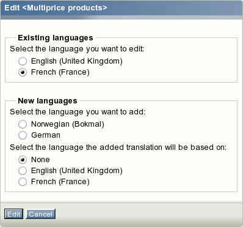
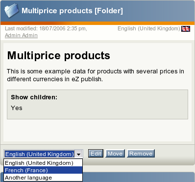
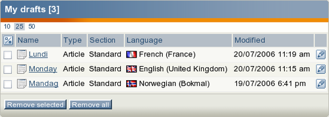
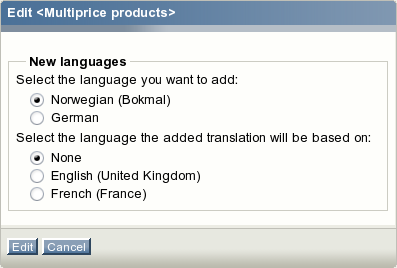

Working with translations
You can use the translations window to view the languages that the object exists in. The following text reveals how you can create, edit and remove the object translations.
Editing a translation
All content editing is done through the object edit interface. This interface will automatically be displayed whenever you're editing existing or creating new objects. If an object exists in several languages then you can choose which translation to edit. The following text reveals how you can edit a translation using different approaches.
Using the translations window
Use the administration interface to
navigate to the object that you wish to edit. In other words, make sure that the object is being displayed.
Enable the translations window and locate the language that you wish to edit. Click on the language's corresponding edit icon (on the right hand side). The system will bring up the edit interface.
Using the "Sub items" window
Use the administration interface to
navigate to the node/object which contains the one that you wish to edit. In other words, make sure that the parent node is being displayed.
Look at the "Sub items" window and locate the node/object that you wish to edit. Click on the node's corresponding edit icon (on the right hand side). You will be taken to the language selection interface which is described below.
Use the radio buttons located in the "Existing languages" frame to select the language that you wish to edit and click the "Edit" button. The system will bring up the edit interface.
The language selection interface
The language selection interface (full or reduced) appears when you have to choose which translation you wish to edit or create. The following screenshot shows the language selection interface for a folder that exists in English and French languages.

The language selection interface.
As you can see from the screenshot above, the language selection radio buttons are divided into two groups. The "Existing languages" group contains the languages that are already used by the object. This list makes it possible to select an existing translation for editing. The "New languages" group contains a list of the translation languages that are not used by the object. The latter makes it possible to translate the contents of the object into a language that it does not exist in yet. When adding a new translation, it is possible to choose which existing translation it should be based on. You can select one of the existing languages or "None". When a language is chosen instead of "None", the main part of the edit page will contain translation interface instead of the standard edit interface.
Using the tree menu and the context menu
Use the tree menu on the left to locate the object that you wish to edit.
Click on the object's icon in order to bring up the context menu.
Access the "Edit in" submenu and select the language that you wish to edit as shown in the following screenshot.
The screenshot above shows the content structure pop-up menu for a folder that exists in English and French. After selecting a language, the system will display the edit interface.
Using the "Edit" button
Use the administration interface to
navigate to the node (page) that you wish to edit. In other words, make sure that the node is being displayed.
Use the drop-down list of languages located in the preview window to select the language that you wish to edit and click the "Edit" button (look at the next screenshot).

Selecting the language for editing.
The system will bring up the edit interface.
Using the bookmarks
Make sure that your bookmarks are being displayed (use the "+" sign to open the window).
Locate the object that you wish to edit and click on its icon to bring up the context menu.
Access the "Edit in" submenu and select the language that you wish to edit. The system will bring up the edit interface.
Editing multiple languages
It is possible to edit two or more translations/languages of the same object. Internally the system actually edits two or more versions of the same object. A draft only contains object attribute data for one language. When the draft is published, the system will copy all other languages from the previously published version. The following screenshot shows how the draft list interface looks like when the user is editing three translations of the same article (this interface can be accessed by clicking the "My account" tab and selecting the "My drafts" link on the left).

The "My drafts" interface.
The translations of the same object can be created and edited separately and simultaneously by multiple users (a user only edits one version and language at a time).
Adding a new translation
You can translate the objects into any of the translation languages using the administration interface. The following text reveals how you can translate an object using different approaches.
Using the "Sub items" window
Use the administration interface to
navigate to the node/object which contains the one that you wish to edit. In other words, make sure that the parent node is being displayed.
Look at the "Sub items" window and locate the node/object that you wish to edit. Click on the node's corresponding edit icon (on the right hand side). You will be taken to the
language selection interface. Select the desired parameters in the "New languages" frame and click the "Edit" button. The system will bring up the edit interface.
Using the tree menu and the context menu
Use the tree menu on the left to locate the object that you wish to edit.
Click on the object's icon in order to bring up the context menu.
Access the "Edit in" submenu and select the "Another language" item. You will be taken to the reduced language selection interface. It contains a list of languages in which the object does not exist (look at the following screenshot) and a list of languages that the new translation can be based on.

The reduced language selection interface.
Select the language that you wish to add and optionally one of the existing languages to be used as original text during translation. After the "Edit" button is clicked, the system will bring up the edit interface.
Using the "Edit" button
Use the administration interface to
navigate to the object that you wish to edit. In other words, make sure that the object is being displayed.
Select the "Another language" item from the drop-down list of languages which is located in the preview window and click the "Edit" button. The system will display the reduced language selection interface (described above). Select the desired parameters and click the "Edit" button. The system will bring up the edit interface.
Using the bookmarks
Make sure that your bookmarks are being displayed (use the "+" sign to open the window).
Locate the object that you wish to edit and click on its icon to bring up the context menu.
Access the "Edit in" submenu and select the "Another language" item. The system will display the reduced language selection interface (described above). Select the desired parameters and click the "Edit" button. The system will bring up the edit interface.
Powered by eZ Publish™ CMS Open Source Web Content Management. Copyright © 1999-2013 eZ Systems AS (except where otherwise noted). All rights reserved.